DeepworkIn uso
Tutto il cantiere in tasca.
Lavorazioni, mezzi, deposito, personale, clienti, documenti dell'ufficio. Quello che serve ritrovare fra sei mesi sta qui, e si cerca dal telefono invece che in un raccoglitore.
- Storico delle lavorazioni e dei rapportini
- Mezzi, deposito, personale, clienti
- Documenti dell'ufficio, pronti da mostrare
Apri Deepwork›Chi tiene l'archivio
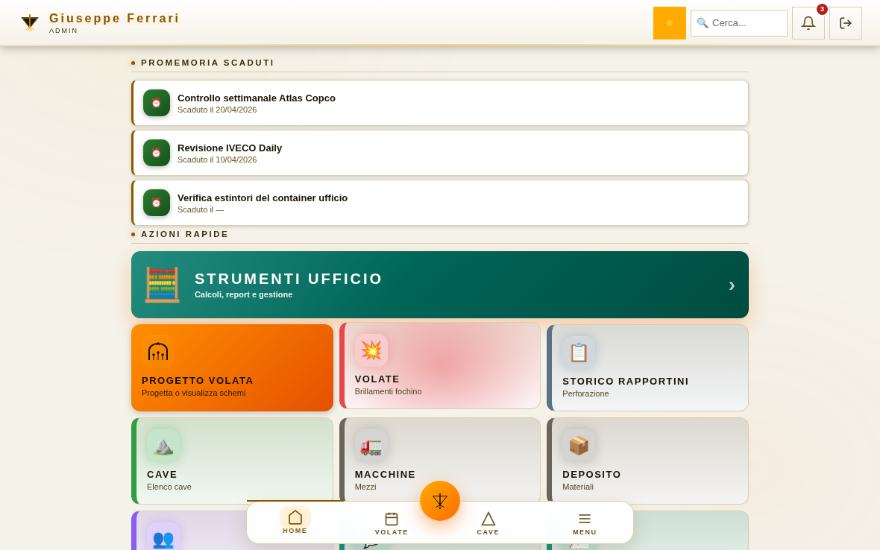
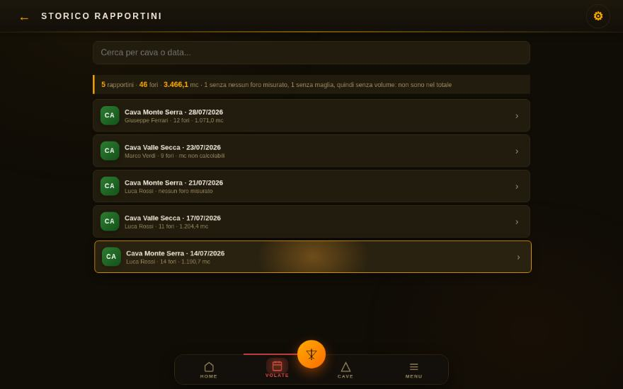
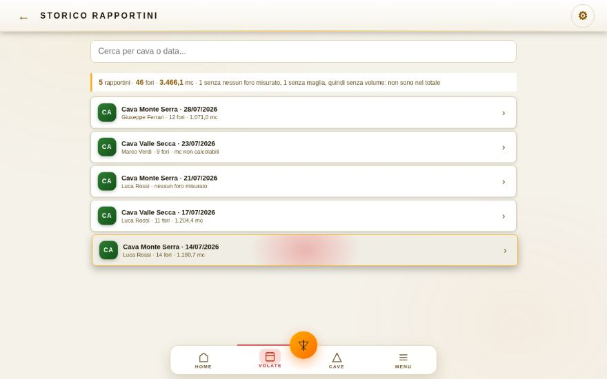
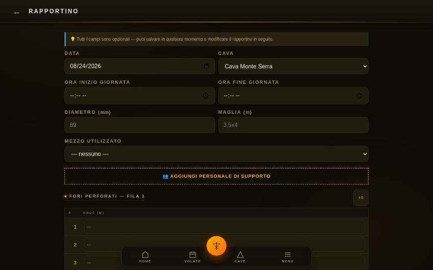
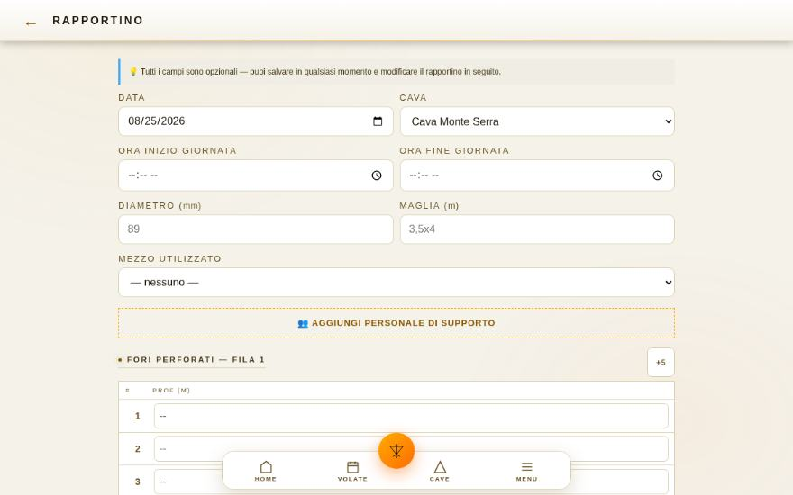
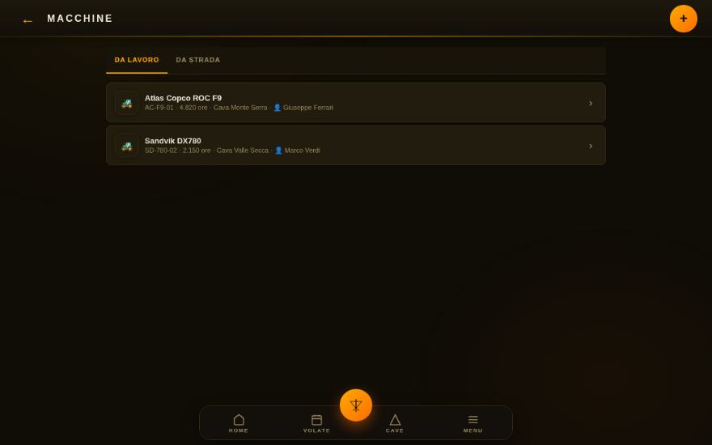
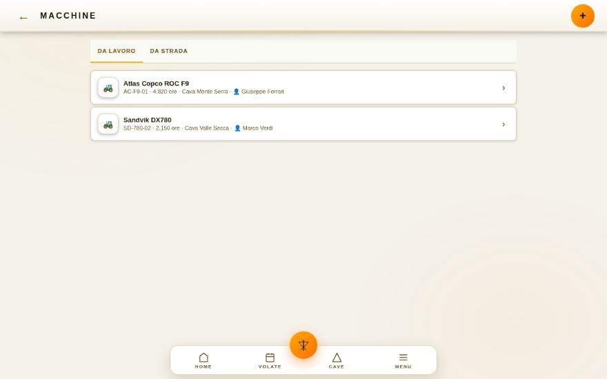
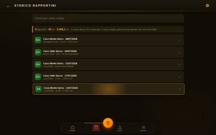
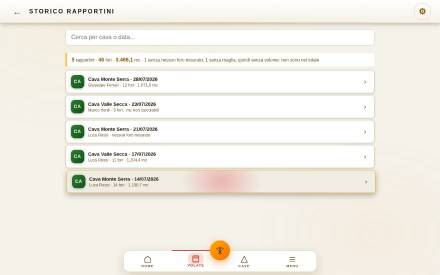
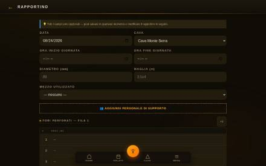
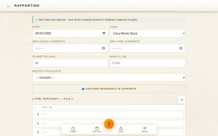
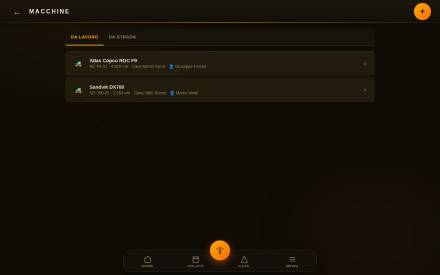
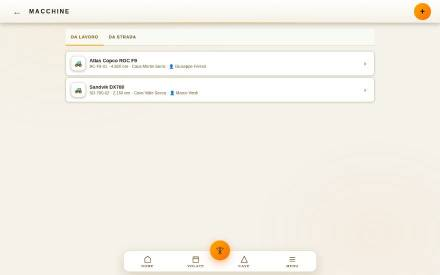
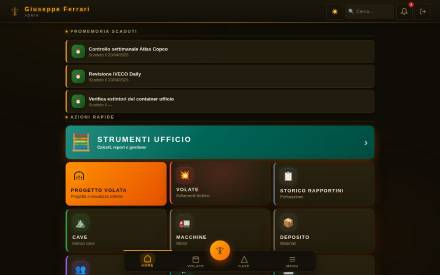
Ritrovato dall'archivioAperto dal telefonoSei mesi di storico, in due tocchi